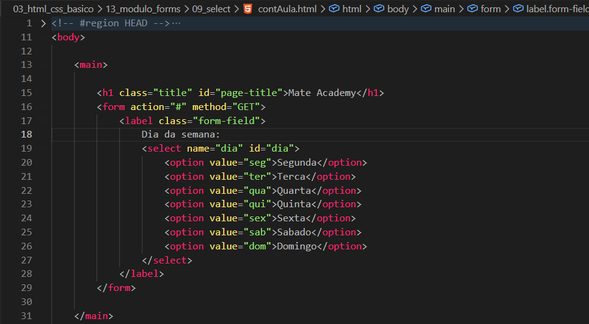
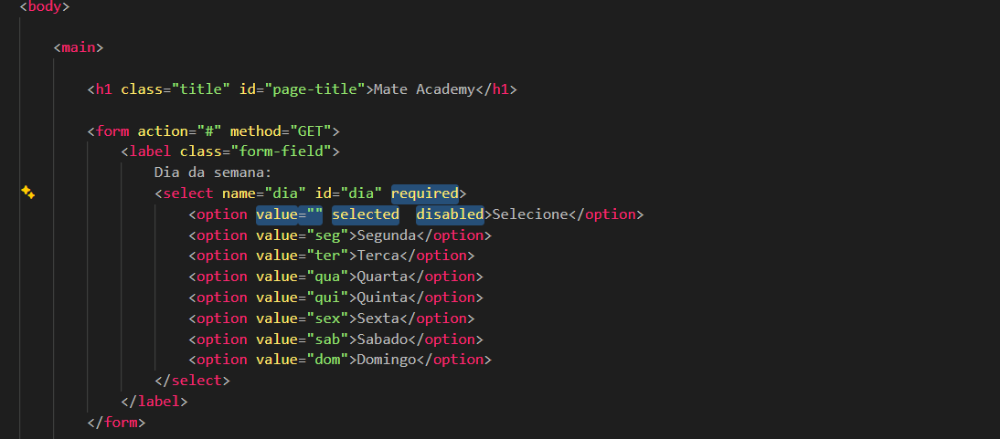

Select
Intro
Aqui iremos ver um metodo de formulario que podemos escolher uma entre multiplas opcoes.
Aqui iremos ver um metodo de formulario que podemos escolher uma entre multiplas opcoes.
HTML:

Aqui iremos ver como podemos ver como fazer um seletor com diversas escolhas onde pode ser selecionado uma. Usado em diversos tipos de sites.
Com ele podemos definir muitplos seletores para que o usuario possa selecionar um. Como exemplo de nosso codigo, temos todos os dias da semana.
Podemos observar que quando selecionamos uma opcao ao clicarmos em enviar, em nosso servidor nao ira aparecer o nome que estava em nosso select mas sim seu value.
Com essa opcao podemos deixar uma escolha definida como default (padrao).
Com ele conseguimos fazer algo como criar um campo de selecione deixa-lo como padrao e apos isso usamos um required em nosso selected, com isso o usuario nao conseguira selecionar essa selecionada por default para enviar. Por seguranca tambem colocamos um desabled em nossa opcao default.
Se em nossa tag selected usarmos o atributo multiple, com ele conseguimos deixar por padrao, multiplas escolhas em nosso opction, onde como resultado teremos as escolhas com option selected.
Geralemente quando precisamos de multiplas escolhas nao usamos o selected. Pois dependendo do navegador ele poder ter comportamentos diferentes.
Exemplo:
